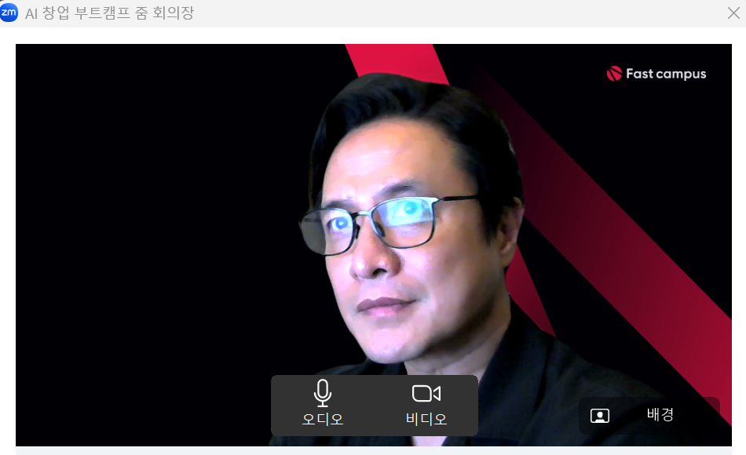
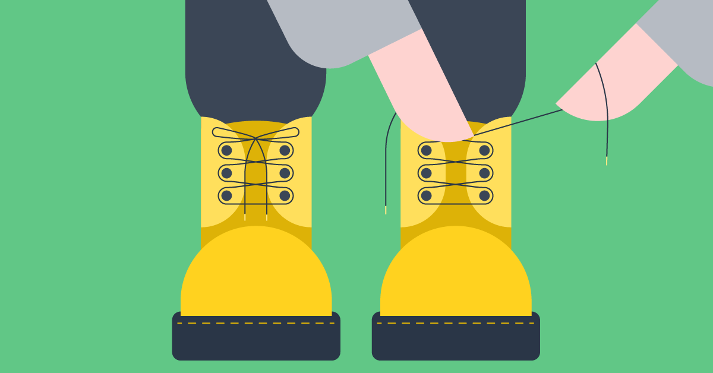
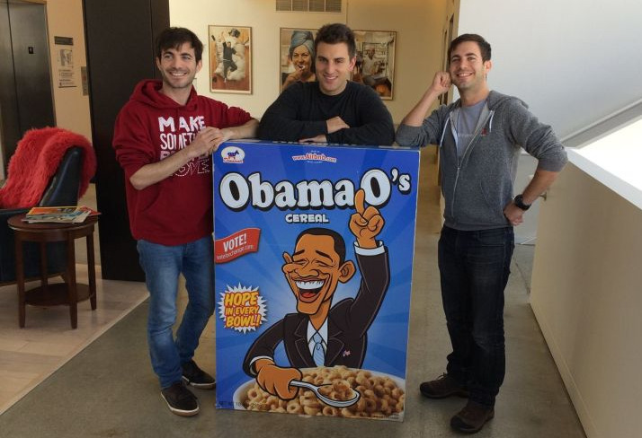
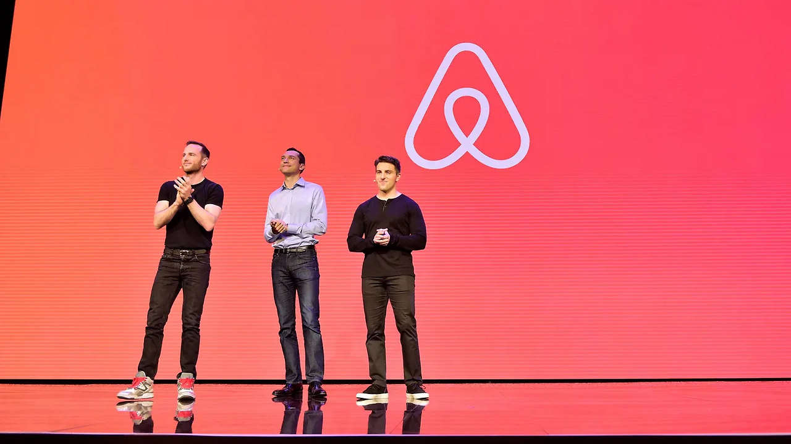

패스트캠퍼스 AI창업부트캠프 과정 특강을 잘 마쳤습니다. 핵심 주제는 부트스트래핑이었는데, 강의 내용 중 흥미로운 에어비앤비 사례를 함께 공유해봅니다.

부트스트래핑은 외부 투자 없이 창업자의 자기 자본이나 초기 매출만으로 사업을 성장시키는 방식입니다. "자신의 신발끈을 잡아당겨 스스로 일어선다"는 의미에서 나온 말로, 완전한 통제권을 유지하며 매출 기반으로 성장하는 것이 특징입니다.

에어비앤비가 부트스트래핑의 대표 사례로 주목받는 이유는 극한 상황에서의 창의적 생존 전략 때문입니다. 오늘날 750억 달러 가치의 글로벌 기업이 되기까지, 초기 2년간은 완전한 부트스트래핑으로 버텨야 했습니다. 투자자들이 "미친 아이디어"라며 외면했던 숙박 공유 서비스를 자력으로 증명해낸 것이죠.
2008년 에어비앤비 창업자들은 파산 직전이었습니다. 15명의 엔젤투자자가 연달아 거절했고 신용카드 빚은 눈덩이처럼 불어났습니다. 투자자들은 "누군가 임대한 숙소에서 살해당할 것"이라며 냉소적으로 말했습니다. 이 절박한 순간 이들이 선택한 해법은 놀랍게도 아침 시리얼이었습니다. 2008년 대선 열기를 틈타 Obama O's와 Cap'n McCain's를 제작해 박스당 제작비 5달러를 40달러에 판매했습니다. 1,000개가 완판되며 3만 달러를 벌어들였고, Obama O's는 매진되었지만 Cap'n McCain's는 남아서 창업자들이 그것을 먹으며 연명해야 했습니다.

이 '미친' 아이디어가 Y Combinator의 폴 그레이엄을 감동시켰습니다. "우리는 바퀴벌레 같은 스타트업을 원한다. 당신들은 죽지 않는다"라며 2만 달러를 투자했습니다. 그가 주목한 것은 절박함을 창의로 바꾼 실행력이었습니다. 이후 폴 그레이엄의 코칭으로 성공 포인트를 찾은 에어비앤비는 2020년 470억 달러 가치로 성공적인 IPO를 하게 됩니다.

초기 창업자들에게 에어비앤비 사례가 주는 인사이트는 명확합니다. 투자가 없어도 포기하지 마세요. 오히려 제약이 창의를 낳고, 생존 압박이 혁신을 만들어냅니다.
470억 달러 기업의 어려운 시기를 지탱한 것은 40달러의 시리얼이었습니다. 여러분의 의지와 작은 아이디어가 세상을 바꾸는 시작이 될 것입니다.